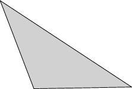
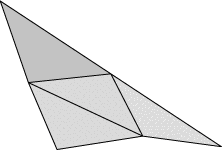
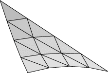
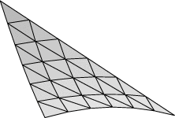
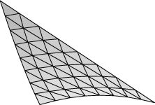
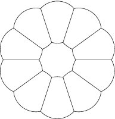
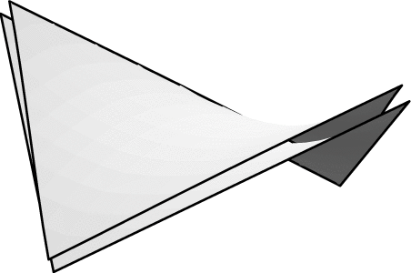

Evolver implements Lagrange elements up through order 8. Here are pictured a single facet in various orders, meshed with their control points:
|
 |
 |
 |
| Order 1 (linear) | Order 2 (quadratic) | Order 4 |
|
 |
 | |
| Order 6 | Order 8 |
Higher-order elements can more accurately represent a surface, but they have the disadvantage of taking more time to compute. Below is a table showing the tradeoff between accuracy and speed for the file cube.fe:
| Lagrange order | |||||
| Refinement | 1 | 2 | 4 | 6 | 8 |
| 0 | 0.276517266 < 0.01 sec | 0.004335146 0.06 sec | 2.37245E-06 0.23 sec | 4.10881E-08 0.80 sec | 3.95497E-11 3.916 sec |
| 1 | 0.068570688 < 0.01 sec | 6.91458E-05 0.06 sec | 2.32691E-09 0.46 sec | 2.60947E-12 3.07 sec | 9E-15 16.04 sec |
| 2 | 0.017587463 0.03 sec | 1.05169E-06 0.23 sec | 2.35012E-12 1.92 sec | 1.6E-16 12.61 sec | 1e-18 63.40 sec |
| 3 | 0.004459441 0.15 sec | 1.61997E-08 1.03 sec | 9E-15 8.50 sec | 1E-18 52.90 sec | |
| 4 | 0.001120878 0.65 sec | 2.5231E-10 5.30 sec | 2E-18 42.58 sec | 1E-18 234.16 sec | |
| 5 | 0.000280722 4.98 sec | 3.94973E-12 31.53 sec | |||
| Order | Improvement factor |
| 1 | 4 |
| 2 | 64 |
| 4 | 1024 |
| 6 | 16384 |
| 8 | lots |
| Lagrange order | |||||
| Refinement | 1 | 2 | 4 | 6 | 8 |
| 0 | 0.087900176 < 0.01 sec | 0.000109299 < 0.01 sec | 7.56228E-07 0.01 sec | 2.88111E-08 0.08 sec | 2.55843E-09 0.23 sec |
| 1 | 0.021300761 < 0.01 sec | 1.98468E-05 0.01 sec | 3.95907E-08 0.02 sec | 1.36209E-09 0.16 sec | 1.2269E-10 0.81 sec |
| 2 | 0.005296499 < 0.01 sec | 1.81652E-06 0.01 sec | 1.97628E-09 0.10 sec | 6.61498E-11 0.67 sec | 6.00E-12 3.44 sec |
| 3 | 0.00132285 0.01 sec | 1.40166E-07 0.05 sec | 9.65104E-11 0.44 sec | 3.240E-12 2.92 sec | 2.89E-13 14.33 sec |
| 4 | 0.000330656 0.03 sec | 9.99313E-09 0.24 sec | 4.72E-12 2.02 sec | 1.5E-13 12.26 sec | 1.0E-14 59.02 sec |
| 5 | 8.26616E-05 0.12 sec | 6.8302E-10 1.16 sec | 2.2E-13 9.06 sec | 1E-15 52.01 sec | |
| 6 | 2.06653E-05 0.62 sec | 4.54996E-11 5.88 sec | 1E-15 43.24 sec | ||
As practice with higher-order elements, run conserved.fe and set the volume so the area of the ideal sphere is exactly 1:
body[1].target := 4/3*pi*(1/4/pi)^(3/2)I suggest conserved.fe rather than cube.fe since the zero eigenvalues of translational degrees of freedom give much more trouble for the hessian in higher orders. You can set the order of the elements with the 'M' command followed by the order, as in "M 2". "linear" is a synonym for "M 1", "quadratic" is a synonym for "M 2", and "lagrange n" is a synonym for "M n". Try this evolution:
body[1].target := 4/3*pi*(1/4/pi)^(3/2) g 5; hessian; hessian; M 2; g 5; hessian; hessian; M 4; g 5; hessian; hessian; M 6; g 5; hessian; hessian; M 8; g 5; hessian; hessian;Note: Internally, the lagrange code was added after the linear and quadratic code, so "linear" is not technically the same as "lagrange 1" (but the effects are the same), and "quadratic" is not exactly "lagrange 2". More mesh operations like refine, delete, equiangulate, etc are defined for linear and quadratic mode than for lagrange mode, so there is no real reason to use "lagrange 1" or "lagrange 2". In general, you want to do all your refining, mesh grooming, and coarse evolution in linear mode, and only switch to higher order modes to get the final precision.
The datafile can be set up directly in quadratic mode by including the "quadratic" keyword in the top section of the datafile, defining a midpoint vertex for each edge as normally done for vertices, and then listing the midpoint vertex as the THIRD vertex on the edge definition line. Nothing is different for facets. Higher order Lagrange elements can also be set up, but I have never done this by hand; but dump files use this feature.
Run evolverLD on conserved.fe and compare the results of the above evolution to see what effect the increased accuracy has.
Note: You will see that the output of the 'g' command does not print area any more. With the extended precision, there just isn't room on an 80-column line for both area and energy.

area_method_name "circular_arc_area" length_method_name "circular_arc_length"This is implementing a general method for substituting named methods for the default area and length, but so far circular_arc is the only real use I've had for it.
To see circular arc mode in action, run flowerarc.fe. It starts in ordinary linear mode. To turn on circular arc mode, do "M 2" or "quadratic". Then evolve "g 15". You have complete convergence, with no need to refine or use higher order elements.
To see the accuracy of circular arc mode, run circle_arc.fe. This has a circle of area pi made out of four edges. Evolve with "M 2; g 5;" and compare the energy to the ideal 2*pi (which you can find with "print 2*pi").
In circular arc mode, edges are drawn as 16 short straight lines, so they look pretty circular. However, in PostScript output, the edges are drawn as exact PostScript arcs.
Circular arc mode is compatible with torus mode. Clipping works correctly (although clipping circular arcs is a much bigger pain than clipping straight edges).
If you haven't already, please read the on-line manual sections on syntax and the command language (at least up to the start of General commands, and I suggest you at least scan the General commands). The Evolver command language started as single letter commands and has gradually accreted features, an eclectic mixture inspired by C, Pascal, SQL, unix shell, and whatever else I may have picked up somewhere. So please be tolerant of seeming inconsistencies, and watch for those little things that are not quite the same as in your favorite language.
Here let me emphasize a couple of features that are involved in almost all non-trivial Evolver commands, attributes and element generators.
Attributes are properties of elements. In object-oriented programming terms, types of elements are classes, elements themselves are objects, and attributes are data members. Some attributes are stored in the element structures in memory (i.e. vertex coordinates, facet colors), some are computed when used (i.e. valence). See the online documentation for lists of the pre-defined attributes available. A useful feature is that users can add their own "extra" attributes either in the top of the datafile or at runtime. These can be single values or multi-dimensional arrays. For example,
define vertex attribute oldx real[3]would provide space to store the coordinates of vertices prior to doing some kind of transformation. You could define a command to calculate the energy change due to a perturbation:
perturb := {
old_energy := total_energy;
set vertex oldx[1] x;
set vertex oldx[2] y;
set vertex oldx[3] z;
set vertex x 1.01*x;
set vertex y 1.01*y;
set vertex z 1.01*z;
g 5; hessian; hessian;
new_energy := total_energy;
set vertex x oldx[1];
set vertex y oldx[2];
set vertex z oldx[3];
printf "Energy change: %20.15f\n",new_energy-old_energy;
}
Element generators. Commands often refer to sets of elements. Being able to exactly specify the set of elements you want is a key part of the art of command writing. The syntax of generators is explained in the online documentation. It was largely inspired by SQL (Structured Query Language), a widely used database language. Here are some little exercises for you to try writing commands for, with my answers just below:
For examples of more elaborate commands, please inspect these:
With the named methods and quantities feature, it is possible to get very detailed information on where numbers are coming from. If you give the "convert_to_quantities" command, every energy, volume, and constraint integrand will be internally converted to named methods and quantities (although the user interface for all remains the same). These internal quantities are ordinarily not displayed by the 'v' or 'Q' commands, but if you do "show_all_quantities" then they will be displayed. Further, 'Q' will show all the component method instances also. For an example, run plates_column.fe and do the following:
Enter command: convert_to_quantities
Enter command: show_all_quantities
Enter command: Q
Quantities and instances:
(showing internal quantities also; to suppress, do "show_all_quantities off")
1. default_length 64.2842712474619 info_only quantity
modulus 1.00000000000000
2. default_area 4.00000000000000 energy quantity
modulus 1.00000000000000
3. constraint_1_energy -0.342020143325669 energy quantity
modulus 1.00000000000000
4. constraint_2_energy -0.342020143325669 energy quantity
modulus 1.00000000000000
5. body_1_vol 1.00000000000000 fixed quantity
target 1.00000000000000
modulus 1.00000000000000
body_1_vol_meth 0.000000000000000 method instance
modulus 1.00000000000000
body_1_con_2_meth 1.00000000000000 method instance
modulus 1.00000000000000
6. gravity_quant 0.000000000000000 energy quantity
modulus 0.000000000000000
Here's a detailed explanation of the output of the Q command above:
default_length - total edge length, using the edge_length method. This would be the default energy in the string model, and I guess it really doesn't need to exist here. But it's an info_only quantity, which means it is only evaluated when somebody asks to know its value.
default_area - the default energy in the soapfilm model, and included in the energy here, as indicated by "energy quantity" at the right.
constraint_1_energy - the energy integral of constraint 1, using the edge_vector_integral method applied to all edges on constraint 1.
constraint_2_energy - the energy integral of constraint 2, using the edge_vector_integral method applied to all edges on constraint 2.
body_1_vol - the volume of body 1, as a sum of several method instances. body_1_vol_meth is the facet_vector_integral of (0,0,z) over all the facets on the body. body_con_2_meth is the integral of the constraint 2 content integrand over all edges on facets of body 1 which are edges on constraint 2.
gravity_quant - the total gravitational energy of all bodies with assigned densities. This quantity is always present even if you don't have any bodies, or don't have any body densities. But you'll notice the modulus is 0, which means its evaluation is skipped, so the presence of this quantity doesn't harm anything.
You can find the quantity or method contribution of single elements by using the quantity or method name as an attribute of elements. Using a quantity name really means summing over all its constituent methods that apply to the element. For example, in plates_column,
Enter command: foreach edge ee where on_constraint 2 do printf "%d %f\n",id, ee.body_1_con_2_meth 5 0.000000 6 0.000000 7 1.000000 8 0.000000 Enter command: foreach edge where constraint_1_energy != 0 do print constraint_1_energy -0.342020143325669
